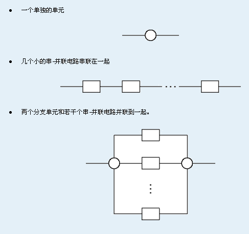
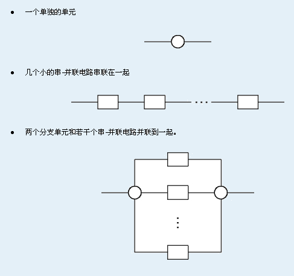

Bytel 公司开始生产一种串-并联电路，每个这样的电路包含很多相连的电子单元以及两个电源，一个串-并联电路可能有以下组成:

这些电路都将组装在一个双面的电路板上。现在的问题就是要确定哪些电路印在正面和哪些印在反面。因为一些技术原因电路应该尽量多的印在反面，但是要求每个单元至少要有一条连接的线路印在正面。求怎样规划使得印在正面的线路最少。
| F.A.Qs | Home | Discuss | ProblemSet | Status | Ranklist | Contest | 入门OJ | ModifyUser Xeonacid | Logout | 捐赠本站 |
|---|
Bytel 公司开始生产一种串-并联电路，每个这样的电路包含很多相连的电子单元以及两个电源，一个串-并联电路可能有以下组成:

这些电路都将组装在一个双面的电路板上。现在的问题就是要确定哪些电路印在正面和哪些印在反面。因为一些技术原因电路应该尽量多的印在反面，但是要求每个单元至少要有一条连接的线路印在正面。求怎样规划使得印在正面的线路最少。
电路的定义由以下的递归方式进行:
大写字母X 的出现总数不会超过10000000, 递归的层数最大不超过500.
输出仅一个数，表示最少有多少线路印在正面.